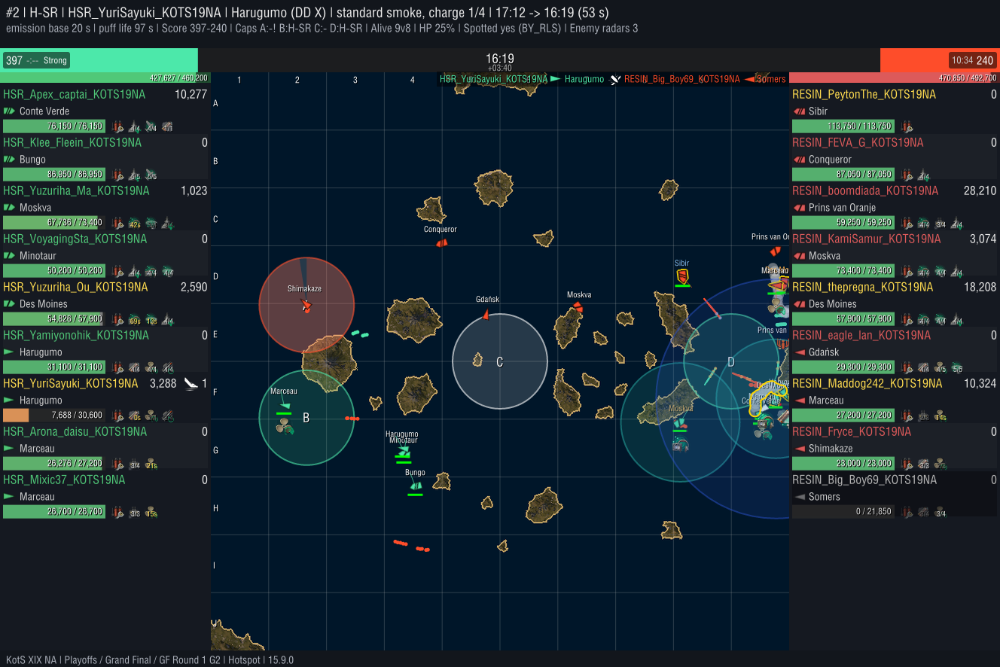
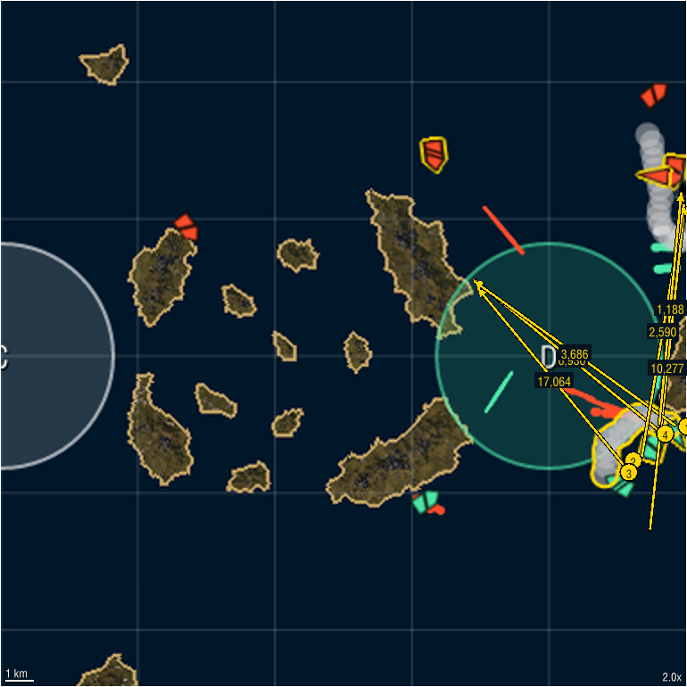

H-SR HSR_YuriSayuki_KOTS19NA Harugumo
Hotspot | H-SR vs RESIN | Playoffs Grand Final GF Round 1 | Game 2 | activated 17:12 (2:48 elapsed, opening), captured 16:19 | standard smoke Lvl_10_Gold
42,016 smoke damage, 1 kill 39,624 concealed, 2,392 detected
Overlapped smoke 90088; every shot was credited to one smoke (the one the shooter sat in, else the first laid), so nothing is counted twice.


Clip available on request.
Classification auto-tagged: rule-based from the replay; fuzzy tags carry a confidence; hover a value for the numbers
| Smoker | Destroyer, standard smoke |
| Movement | Pushing |
| Coverage | Screen |
| Purpose | |
| Location | zone east; right lane; nearest cap D is a center cap on the flank |
| Front line | behind the midpoint between the fleets |
| Caps in range | C, D |
| Counter to | RESIN_Big_Boy69_KOTS19NA Somers laid 14 s after enemy smoke 90084 and 12.0 km from it (borderline) |
Confidence: high medium low rule-based
Deployment
| Duration | 179 s |
| Allies in smoke at capture | none |
| Selfish smoke | no |
| Hand tags | untagged |
Objectives
| Distance to contested cap | 17% of the way into contested cap D (cap radius 4.0 km), contested because it sits on the midline between the spawns |
| Cap outcome | cap D defended while the enemy invaded it |
| Denial signal | 0.2 enemy ships in or near cap D in the minute before, 0.7 while the smoke stood |
| Score at capture | 397 : 240 (swing +133) |
| Our radar from the smoke | none |
| Radar cap coverage | 100% of cap D within HSR_Yuzuriha_Ou_KOTS19NA's radar range, the whole cap; radar was not activated from the smoke |
Violence
| Smoke damage | 42,016 |
| Concealed vs detected | concealed 39,624detected 2,392 |
| Detected shooters were spotted by | radar 1,468, smoke fire penalty 924 |
| By where the shooter sat | fired from inside 6,078fired from outside, hidden by it 35,937 |
| By kind | shells 35,369, fires they started 6,646 |
| DD damage | 14,055 |
| Kills from smoke | 1 |
Shooters credited are in the Smokees table below.
Enemy ships damaged from the smoke
| Ship | Player | Concealed | Detected | Total | Sunk |
|---|---|---|---|---|---|
| Sibir | RESIN_PeytonThe_KOTS19NA | 26,757 | 924 | 27,681 | no |
| Somers DD | RESIN_Big_Boy69_KOTS19NA | 12,867 | 1,188 | 14,055 | yes |
| Des Moines | RESIN_thepregna_KOTS19NA | 0 | 280 | 280 | no |
The bad news
| Radar spots on us | none |
| Smoke deaths | 2: HSR_YuriSayuki_KOTS19NA (Harugumo) sunk at 14:31, concealed inside the smoke; HSR_Yuzuriha_Ou_KOTS19NA (Des Moines) sunk at 14:19, concealed behind the smoke |
Smokees the smoker, every ally the smoke covered (inside it, firing undetected from behind it, or with it in their line of fire) and every credited shooter; numbers match the zoomed view
| Ship | Player | Role | Undetected | Detected by (time) | Damage dealt concealed / detected | Damage taken while covered | Kills | |
|---|---|---|---|---|---|---|---|---|
| 1 | Harugumo | HSR_YuriSayuki_KOTS19NA | smoker | 67% | radar 43 s, surface lit 8 s | 3,686 / 1,188 | 29,475 | 1 |
| 2 | Marceau | HSR_Arona_daisu_KOTS19NA | behind | 83% | surface lit 16 s, radar 6 s | 17,064 / 0 | 0 | 0 |
| 3 | Conte Verde | HSR_Apex_captai_KOTS19NA | inside | 100% | - | 10,277 / 0 | 11,475 | 0 |
| 4 | Des Moines | HSR_Yuzuriha_Ou_KOTS19NA | inside | 77% | radar 12 s, surface lit 10 s, smoke fire penalty 8 s | 8,596 / 1,204 | 39,544 | 0 |